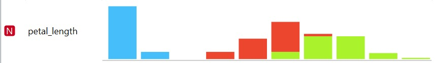
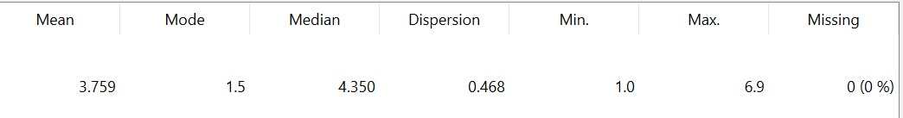

Analisis Statistik Deskriptif#
Metode untuk meringkas, mengatur, dan menyajikan data mentah agar menjadi informasi yang mudah dipahami, biasanya melalui nilai rata-rata (mean), median, modus, standar deviasi, maksimum, dan minimum.
Visualisasi Orange#
{kind=link}

{kind=link}

Fig. 1 Fig. 1 Analisis Statistik Deskriptif Fitur petal-length#
Source Code#
import pandas as pd
df = pd.read_csv("data/IRIS.csv")
petal = df["petal_length"]
print("=== Statistik Deskriptif Petal Length ===\n")
print("Jumlah data :", petal.count())
print("Rata-rata (Mean) :", round(petal.mean(), 3))
print("Nilai minimum :", petal.min())
print("Q1 (25%) :", petal.quantile(0.25))
print("Median (Q2) :", petal.quantile(0.50))
print("Q3 (75%) :", petal.quantile(0.75))
print("Nilai maksimum :", petal.max())
mode_value = petal.mode()[0]
mode_count = petal.value_counts()[mode_value]
print("Modus :", mode_value)
print("Frekuensi modus :", mode_count)
print("Standar deviasi :", round(petal.std(), 3))
print("Variansi :", round(petal.var(), 3))
=== Statistik Deskriptif Petal Length ===
Jumlah data : 150
Rata-rata (Mean) : 3.759
Nilai minimum : 1.0
Q1 (25%) : 1.6
Median (Q2) : 4.35
Q3 (75%) : 5.1
Nilai maksimum : 6.9
Modus : 1.5
Frekuensi modus : 14
Standar deviasi : 1.764
Variansi : 3.113
Keterangan Hasil#
Jumlah data menunjukkan banyaknya sampel yang dianalisis.
Rata-rata (mean) merupakan nilai pemusatan data.
Nilai minimum dan maksimum menunjukkan rentang data.
Q1, Median (Q2), dan Q3 membagi data menjadi empat bagian sama besar.
Modus adalah nilai yang paling sering muncul dalam data.
Standar deviasi menunjukkan tingkat penyebaran data dari rata-rata.
Variansi merupakan kuadrat dari standar deviasi.
Kesimpulan#
Berdasarkan analisis statistik deskriptif, atribut petal-length pada dataset Iris memiliki sebaran data yang relatif stabil. Nilai standar deviasi yang tidak terlalu besar menunjukkan bahwa data tidak menyebar jauh dari nilai rata-ratanya.